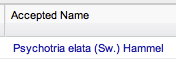
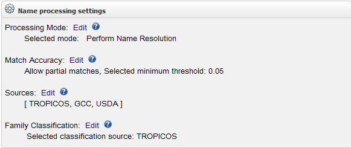
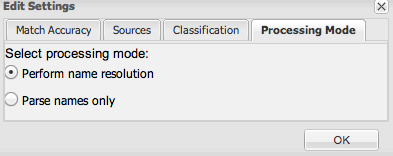
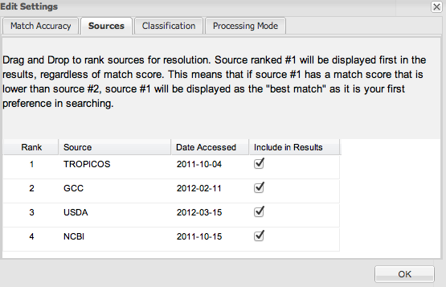
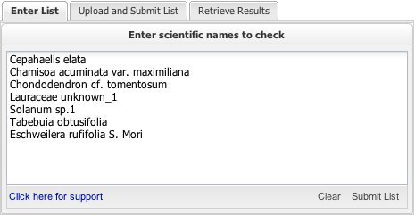
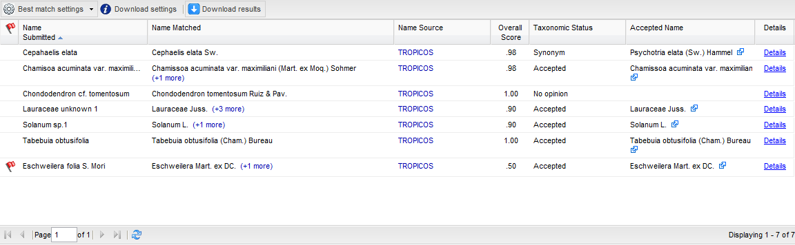

Instructions
To view a quick summary of instructions, click here: Quick Guide.
Table of Contents
- Settings
- Enter or Upload Names
- Inspect Results
- Download Results
- Perform name resolution: this option processes names completely with the TNRS, making use of the GNA parser and Taxamatch to determine the best match for your submitted name.
A number of additional settings will influence the names returned to you when this is selected. Match Accuracy, Source Selection and Ranking, and Classification settings may be applied to further enhance your returned results. - Parse names only: this makes use of the GNA parser to return the atomic parts of your submitted name. No other settings need to be applied.
- Allow partial matching: when selected the TNRS will match to a higher taxon if a match to the full name submitted cannot be found.
For example, submitting Vitis vitifolia will return Vitis L. from the Tropicos source if this setting is enabled. When disabled, you will get a return of "no matches found". - Set Match Accuracy: allows a user to determine how exact the matches are.
Setting the threshold to the lowest setting will return all names found within an edit distance of 4 (4 missed letters, 4 transposed letters).
Using the highest setting will allow you to validate your names by only providing exact match details for the names you submit. Central to this slider is our "happy medium" where names that score 0.5 according to our scoring algorithm will be returned. - Source selection: The 3.0 version of the TNRS includes four sources for selection to use in matching of your submitted names. By default, all four sources are selected, so the TNRS will match against all names in our database when name resolution is performed. If the name submitted is matched to names from more than one source, the sources will display by that name in the results grid.
- You may narrow your focus of sources by deselecting the sources from the Sources tab in the settings.
For example, should you only wish to match to Tropicos and USDA names, you can deselect NCBI and GCC as sources. The TNRS will then only return names found in those data sources when matching is performed. Should no match be found in those sources, you will be returned a status of "no suitable matches found". - Source ranking: You may rank sources in order of preference by dragging and dropping sources in the order by which you wish your results to be returned for display.
The TNRS will return all names found within your selected match threshold for all sources selected. The best match is determined to be the name with the highest lexical score (best spelling match). Should this name not be within the same taxonomic group as the name you submitted, you will receive a flag letting you know that a better taxonomic match has been found.
Should your name match to a name with the same score, the best match will be displayed according to the highest taxonomic acceptance. Should more than one name with the same score and acceptance be found, names will be ranked alphabetically.
You may refine your results by selecting either "Constrain by source" or "Constrain by higher taxonomy" from the "Best Match Settings" button on the results grid. - Example of override: the genus Acer albopurpurascens is found in both the NCBI and Tropicos databases. However, NCBI attributes this genus to the family Aceraceae, whereas Tropicos attributes this genus to Sapindaceae Juss.
- If you choose to override the APGIII family classification with NCBI, the family attributed would be displayed as Aceraceae for this name. Other family names for all other names returned would be listed with the NCBI classification. If there is no classification for family that is attributed to that name in NCBI, then the family field for your returned name will be blank.
- Enter up to 5000 names in the Enter List tab, one name per line regardless of the file extension. You may type the names in the box or cut and paste from a text editor.
- As an option, you may include the family name in front of the scientific name, separated by a space. Family name is NOT required. This option is provided to support ecological data where some taxa are identified only to family, followed by a morphospecies identifier (for example, Lauraceae sp.3). However, if you include family you may improve your matches by preventing fuzzy matching to similar names in different families.
- Click the Submit List button to begin or Clear to start over.
- Wait while the list is processed. Results appear when complete in a table immediately below the tabbed input box.
- Upload a list of names separated by commas in the Upload and Submit List tab, with or without authority.
- Processing long lists takes time. Enter an email address to receive a notification when the list is successfully submitted and another when it is completely processed. The second email will include a Submission Key to be used to retrieve your results in the Retrieve Results tab.
- You have the ability to upload a list with a unique identifier for each name. The identifier must be in the 1st column of the list.
- Click the Submit List button to begin.
- When the list is processed, enter your email address and Submission Key in the Retrieve Results tab. Click the Retrieve button.
- Results appear in a table immediately below.
- If the TNRS application finds only one match for a submitted name, that match is displayed in the results.
- If the TNRS application finds more than one near match for a submitted name, it will choose a single best match and display it in the list.
You may select an alternate match if you prefer. Click the (+X more) link to view and select from multiple options when they exist.

- Select the preferred term from the popup list and click the Apply selected button or click Cancel to retain the current selection.
- If the TNRS finds multiple equally-good matches and cannot select a single best name, or if there are other issues with the results requiring inspection by the user, it will display a red warning flag:

- Mouse-over the flag to see the reason. Click on the flag for a more detailed explanation.
- Click the arrow icons in the Accepted Name field to go to the accepted name for a given source. Hovering over the icons will give you the source with a link.
- Click the Name Source to open the source's database page (not available for USDA at this time).
 - Taxonomic Status tells you whether the matched name is also the accepted name (Accepted) or whether the matched name is a synonym of a different accepted name (Synonym).In some cases, there may be insufficient information to determine the status of the name, or the Computed Acceptance algorithm is unable to choose a single best name from among alternative conflicting accepted names (No opinion).
- Click Details to view a popup with more information about a matched name.
- Click Download results located at the top left corner of the results window to download a CSV file.
- Ambiguous Match: more than one matched name was found with the same score and acceptance.
- Partial Match: name matched is a higher taxon than the name submitted.
- Better spelling match in different higher taxon: anotheir name that was found to match the submitted name has a better overall score, but is not within the same taxonomic group.
- Better higher taxonomic match found: another name with a lower overall score has a better matching higher taxon.
- Parse only mode: names are returned in a sortable grid with the taxonomic elements displayed according to how they are interpreted by the GNI parser.
- Name resolution mode:
- Name Submitted: the exact name submitted for processing.
- Name Matched: the best match found in the TNRS database for the submitted name.
- The best match is determined by the settings applied by the user. By default, names will display according to source taxonomic constraint (best match is most similar to the name submitted according to the most closely related taxonomic match).
- If there is more than one name found that matches to the submitted name, then a (+X more) link will be displayed next to the name. An alternate match may be selected by clicking the (+X more) link to view and select from multiple options when they exist.
- Select the preferred term from the popup list and click Apply. To retain the current selection, click Cancel. If the TNRS finds multiple equivalent matches and cannot select a single best name, or if there are other issues with the results requiring inspection by the user, it will display a red warning flag.
- Name Source: the source of the name matched to the submitted name.
If more than one source exists for the name matched, the TNRS will display all sources for that name. Selection of the hyperlinked source (where available) will direct the user to the web page for the matched name as it is described in that source for further investigation. - Overall Score: score that was calculated according to our scoring algorithm for the name found that matches the name submitted. Note: With taxonomic constraint on, it is possible that a better lexical match has been found to the name, thus having a higher score for a name that is not in the same taxonomic group. If this occurs, a warning flag will be displayed.
- Taxonomic Status: the status of the matched name.
- Accepted Name: where applicable, the accepted name for the matched name will display in this field.
- Details: displays all details determined as a by-product of processing the submitted name. The panel displays the following:
- Sorting by source (default): The name from the first source selected will always display as the best match unless there is no match found in that source.
If no match is found in the first source, the best match in the second ranked source will display until all selected sources are exhausted. - Taxonomic constraint: It is possible that the best match is not within the same taxonomic group as the name submitted and that a better taxonomic match exists. Turning on this option will ensure that the best match is within the matched higher taxonomic level.
If this option is turned off, a warning flag will be placed next to the submitted name. - Turning off both options: By turning off both the taxonomic constraint and sort by source options, all names will be returned according to the highest score found, regardless of source or taxonomic group.
- Turning on both options: If both options are turned on, the source takes priority over the taxonomic constraint.
- Files are downloaded with Unix-like new line characters. This is usually not an issue with newer text editors and spreadsheets, but rarely results will appear to all be in a single line when using other applications.
- If your browser is set to prompt you for download information, be sure to select 'all files' as the download type to ensure proper retrieval of your data.
Current Settings
Prior to submitting a list, there are settings that can be adjusted. To change your settings, locate the Current Settings box to the right of the application. Click Edit next to your desired mode.
Processing Mode
The GNA parser will attempt to determine the elements of your name string and return back the name tokens identified.
Match Accuracy
The Match Accuracy settings allow you to determine the sensitivity of the lookup and fuzzy matching to the names in our TNRS data repository.
For example, if you submit a genus+species with the genus name spelled correctly but the species name spelled incorrectly, the application may match a name that is a closer edit distance for the overall name. In this case, it is possible that genus+species will be returned with a higher score that is not the intended species. If you know that the genus or a higher taxon submitted is correct, you can use this option to filter the best match to be constrained by that higher taxon.

Sources
Disclaimer: The TNRS database is a repository for numerous sources. The TNRS team makes no attempt at determing the authority of the names, rather we provide the information that is available from these sources in a centralized location for matching of submitted names. Should you encounter issues with names that are lacking, please contact the source curators directly.

Classification
By default, the TNRS will return the classification for family according to the APGIII classification if you have selected more than one source. If you select only one source, the family will be displayed for that source. In this case, if you have selected a source of USDA only, you will get the family classification for USDA only (which is very similar to the APGIII classification schema).
This setting has the option to apply a different family classification, which may vary between sources. You may override this family classification by selecting the NCBI classification schema for family.
Enter or Upload Names for Resolution
There are two ways to use this application: enter a list or upload a list.
Enter List
Upload and Submit List
Note: If you upload your list in UTF-16 format, you may include special characters. However, if you manually enter your list, you may not include special characters as they can not be translated. If you manually enter your list with special characters, you may receive an inaccurate match score.
Inspect Results
We strongly recommend users carefully examine any result with Overall Score less than 100%, or with more than one Name Matched (as indicated by the “(+X more)” link after the Name Matched; see step 2 below). The TNRS provides a link to the original source of each name.
Results Screen
Your results will appear in the following window:
When more than one of the above scenarios are encountered, numerous messages will appear when selecting the flag. These warnings will also be part of the downloaded list.
Warning Flags
If TNRS is unable to uncategorically resolve your submitted name to one best matched name in our database, a red warning flag will appear next to the submitted name.Flags will be displayed for the following scenarios:
Viewing Your Results
Initial grid display
- Names found as matches to submitted names are returned in a sortable grid (you can click the headings to sort) that displays the following information:
If an accepted is found in more than one source, an icon will appear for each source next to the accepted name. Click the icon to go to the source's web page.
| Name matched | Name matched for the submitted name. |
| Name source(s) | Source(s) that contain the matched name identified. |
| Name matched rank | Taxonomic rank of the matched name. |
| Name score | Score for the name found. |
| Author matched | The author found to match the submitted name (only displays when author is submitted with the name string). |
| Author score | Score for the author string submitted. |
| Overall score | The score calculated for the name found that matches the submitted name (includes author where applicable) |
| Family matched | The family that is found to match the submitted name (Only displays when family is submitted with the name string) |
| Name matched accepted family | The accepted family for the submitted name. This depends on the classification schema selected in the settings. |
| Genus, specific epithet, infraspecific epithet (1 and 2) matched | Depending on the name submitted, the token detected by the name parser will be matched to the data in the database. The matched token for each taxonomic rank will be displayed in these fields. |
| Genus, specific epithet, infraspecific epithet (1 and 2) score: | Score applied to each name found to match the submitted name, broken down by taxonomic element. |
| Infraspecific rank (1 and 2) | The rank indicator detected as a parsing product. |
| Annotations | Annotations are contained in the submitted name as detected by the parser. |
| Unmatched terms | Terms not able to be matched given the scoring threshold applied by the user. |
| Taxonomic status | Nomenclatural status for the matched name. |
| Accepted name | Accepted canonical name found for the name matched (where applicable). |
| Accepted name source(s) | Source(s) for the accepted name (where applicable). |
| Accepted author | Author attributed to the accepted name (where applicable). |
| Accepted species | Accepted species for the name matched (where applicable). |
| Accepted Family | Accepted family for the accepted name listed. |
| Warnings | Any flags that are associated with the name submitted (see warning flags). |
Batch match settings
In the case of a name that has multiple matches, these options control which of the returned names is considered the best match.
As a general rule, multiple names are ranked according to the highest match score. Two options are available to modify this behavior:
Download Results
After clicking Download results, you will have the option to download in a Simple or Detailed format.Note:
Simple Download
The Simple download contains the general information displayed on the results screen.| Name_submitted | Name entered by the user. |
| Name_matched | Scientific name with the highest match score. May be an exact match or a fuzzy match. This score does not include the author score. |
| Name_matched_author | Standard authority for the matched name. |
| Author_matched | Standard authority of the name with the highest match score name. |
| Overall_score | Score assigned by the TNRS to indicate overall similarity between the submitted name and the name returned by the TNRS. This score incorporates the author score as well. |
| Taxonomic_status | see Taxonomic Status |
| Accepted_name | Accepted name for the Name_matched, according to the taxonomic source used. If the Name_matched is accepted, this name will be the same as the Name_matched. If the Name_matched is a synonym, this name will be different. |
| Accepted_author | Standard authority of the Accepted_name. |
| Accepted_family | The accepted familial classification of the accepted name for the name matched by the TNRS. |
| Warnings | see Warning Flags |